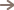

בית פיין קוק
- 1/8 דפדפו בין התמונות
- 

מחלקת התבלינים בבית פיין קוק החדש
FEIN COOK ממקמת את עצמה בחזית הידע והמגמות המשתנות בעולם כדי לקחת חלק במהפכה הקולינארית המתחוללת בארץ, ולהוביל את אומנות הבישול צעד נוסף קדימה. בבית FEIN COOK מאתרים מכונות מזון וציוד עזר למטבח הביתי והמקצועי מכל רחבי העולם.
אנו בוחרים את המכשירים המתקדמים בעולם באיכותם ובחדשנותם אשר משפרים את המקצוענות, מייעלים תהליכי עבודה וחוסכים זמן וכסף, תוך שימת דגש על האיכות הקולינרית של המנות. כחלק מראיה אל העתיד והצורך בגיוון, מקוריות והתחדשות. כל מכשיר נבחן בקפידה תחת עיניו וידיו של השף יאיר פיינברג. ניסיונו העשיר של השף בעולם הקולינריה והמסעדנות בישראל ובאירופה, עוזר לו להביא אלינו את הידע והטכניקה ממטבחי עלית עולמיים.
בהמשך לבחירת המכשירים המתקדמים בעולם באיכותם ובחדשנותם. FEIN COOK חרטה על דגלה הקמת מערך שירות לקוחות ושירות טכני למכשירים, מהמתקדמים ביותר, תוך שימת דגש על שביעות רצון הלקוח ויצירת נאמנות למכשירים ולחברה.